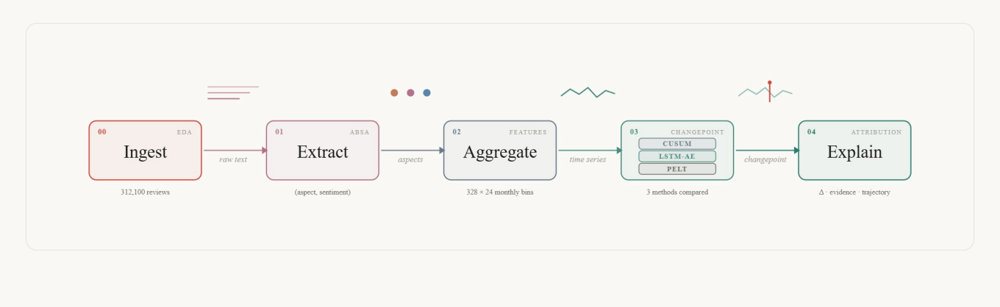
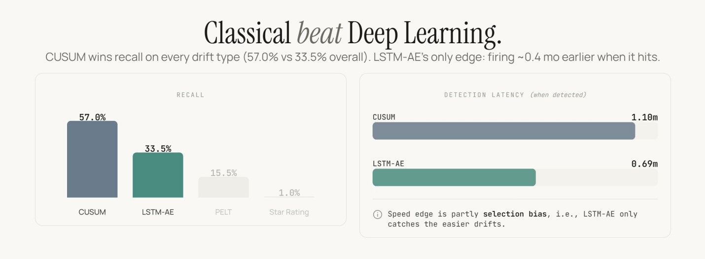

01The problem
Star ratings tell a company that something has gone wrong. They rarely explain what changed, when it changed, or which product aspect caused the shift.
SentinelDrift was built around a practical product question: if customers start complaining about battery life, charging, audio, or software updates, can a manufacturer see that drift early enough to act? A single overall rating hides too much. Two products can both sit at four stars while one has a rising battery issue and the other has a camera problem.
The project used Amazon Reviews 2023 smartphone data and treated the problem as an aspect-level monitoring system: extract sentiment for specific product aspects, aggregate those signals over time, and then detect whether the time series has drifted.
02The approach
We built the pipeline in four main stages. First, we cleaned and filtered smartphone review data into an analysis-ready corpus. Then the ABSA layer detected mentions of nine product aspects, such as battery, display, software, charging, audio, and performance, and classified the sentiment around each mention.
Those aspect-sentiment predictions became monthly product-level time series. Sparse months were handled carefully with shrinkage and robust normalisation rather than pretending every product-month-aspect cell had equal evidence. Finally, the drift layer compared a lightweight LSTM autoencoder against CUSUM and PELT baselines.
The dashboard wrapped the output into an analyst workflow: portfolio alerts, product pulse, root-cause evidence, and system-health views. The best version of this project is not just a notebook result. It is a monitoring product concept.

03Key decisions
04Results
| Component | Result | What it means |
|---|---|---|
| PyABSA APC | 0.883 CV macro F1 | Deep learning clearly helped for aspect-aware sentiment extraction. |
| TF-IDF + Logistic Regression | 0.275 CV macro F1 | A useful baseline, but weak at linking sentiment to a specific aspect. |
| CUSUM | best recall | The statistical monitor was better for persistent drift in sparse monthly signals. |
| LSTM autoencoder | faster when it fired | Useful as an early-warning signal, not a replacement for the statistical baseline. |

The strongest part of the project is that the result is not over-polished into a fake victory lap. Deep learning earned its place in ABSA. It did not dominate drift detection. That makes the project more credible, not less.
05What we would do differently
We would make the gold-label process stronger. The ABSA evaluation depends on a small labelled set, so the next version should use double-labelling, inter-annotator agreement, and a larger sample across weaker aspects like build, connectivity, and software.
We would also test a domain-tuned ABSA model on smartphone reviews instead of relying on a model trained mostly outside this domain. PyABSA performed well, but missed aspects are still a blind spot, and aspect-detection recall matters as much as polarity classification.
For the product side, we would add competitor and category baselines. If software sentiment drops across every phone in the same month, that is probably an ecosystem event, not a defect in one product. A real monitoring tool needs that distinction before it asks a team to investigate.